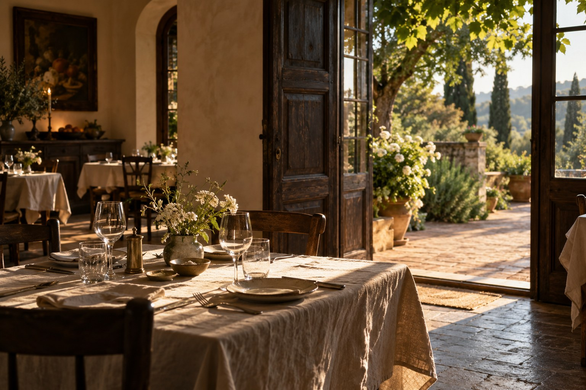
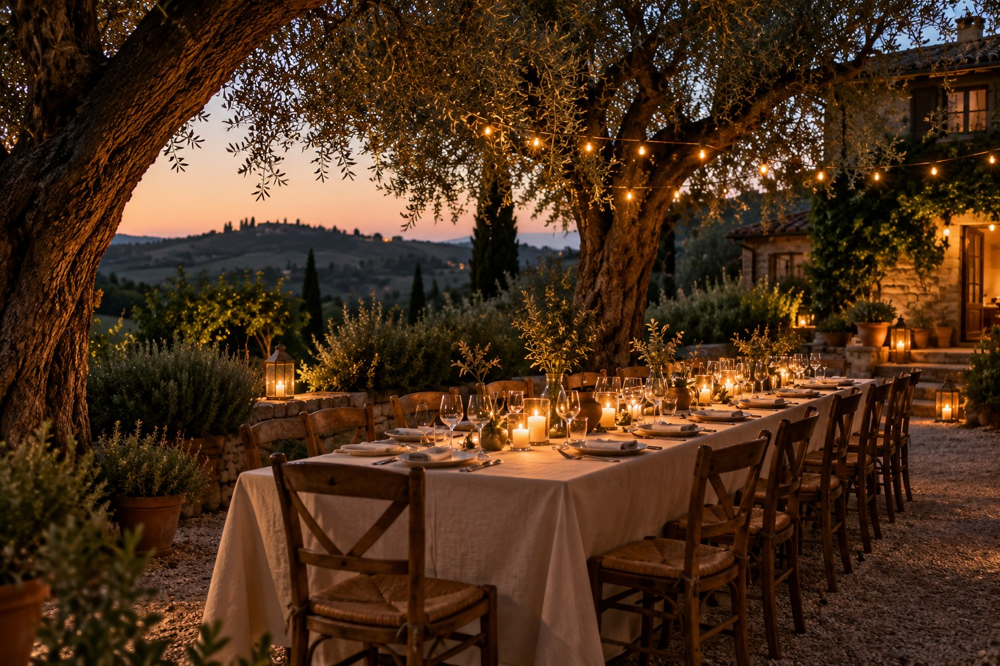
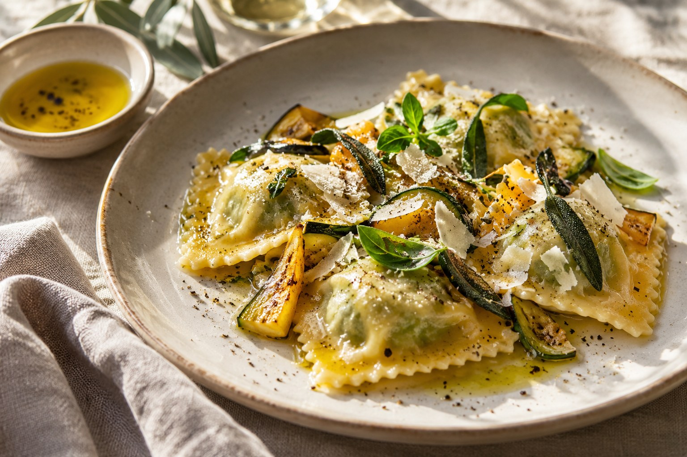
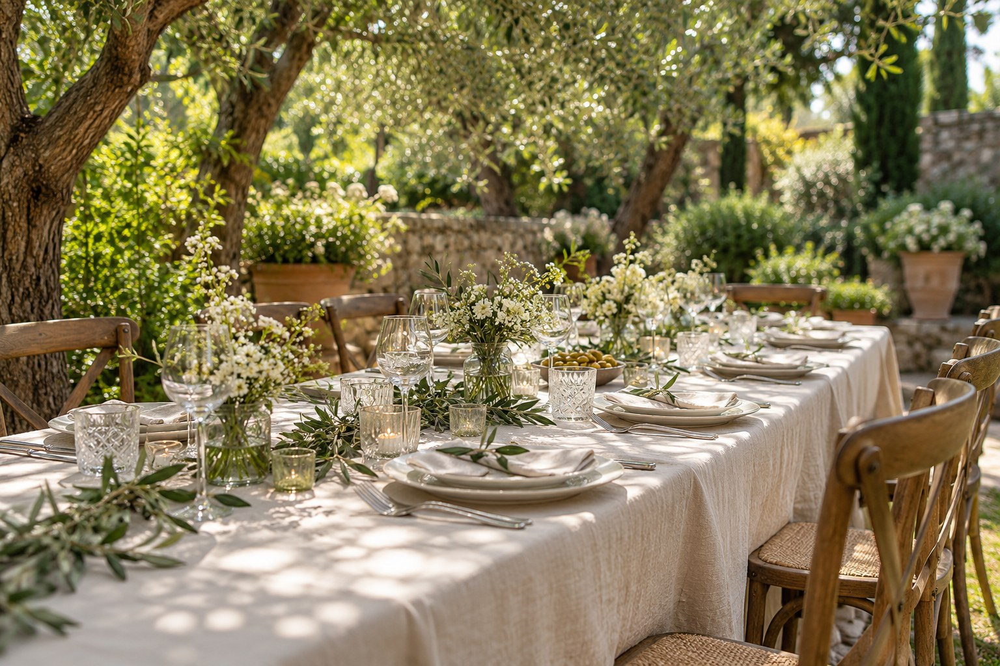

Matrimoni
Il ricevimento, le persone care. Il vostro giorno.

TRATTORIA MENOTTI · DAL 1951
Cucina italiana, ospitalità e occasioni da vivere
a Soleschiano di Manzano.
I / L’OSPITALITÀ
Dal 1951, Menotti accoglie a Soleschiano di Manzano. La cucina locale e italiana, una tavola condivisa, le occasioni importanti.
Entra negli spazi
II / LE OCCASIONI
Il ricevimento, le persone care. Il vostro giorno.
Battesimi e anniversari, da vivere insieme.
Compleanni, incontri e cene di gruppo.
III / LA CUCINA
Cucina italiana e sapori locali.
Per un pranzo, una cena, un’occasione speciale.
Opzioni vegetariane e senza glutine. Comunica allergie e necessità al momento della prenotazione per concordare le possibilità.

IV / GLI SPAZI
Sale interne e giardino.
Spazio alle vostre occasioni.

La scelta degli spazi si concorda
in base all’occasione e agli ospiti.
V / CI VEDIAMO DA MENOTTI
SOLESCHIANO · FRIULI